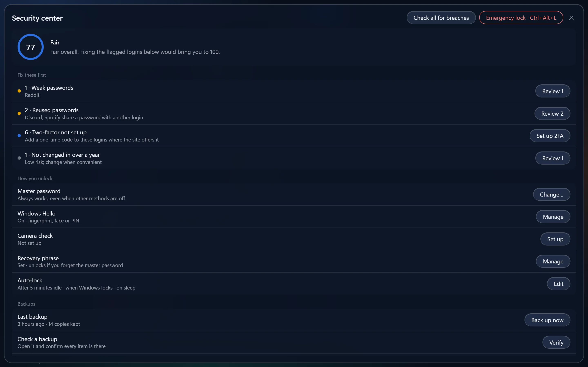

Tout ce qu’il fait, et où il le fait
Tout cela s’exécute sur vos propres appareils : l’app Windows, l’extension de navigateur et l’app iPhone. L’offre gratuite contient jusqu’à 7 éléments ; Pro supprime la limite et ajoute la synchronisation, les codes à deux facteurs et les documents.

Le coffre-fort
- Chiffré sur votre disque
- Tout ce que vous enregistrez est chiffré avec une clé protégée par votre mot de passe principal, à l’aide d’Argon2id et d’AES-256-GCM. Les noms, les noms d’utilisateur et les sites web sont chiffrés eux aussi, pas seulement les mots de passe.
- Plus que des mots de passe
- Identifiants de sites web et d’applications de bureau, clés d’accès, cartes de paiement, comptes bancaires, identités, notes sécurisées, documents, clés SSH, clés d’API, réseaux Wi-Fi, favoris, licences de logiciels, abonnements, garanties et achats, chacun avec ses propres champs.
- Documents (Pro)
- Conservez des fichiers, comme des documents numérisés, dans le coffre-fort, jusqu’à 25 Mo chacun. Chaque fichier est chiffré avec sa propre clé. Affichez un aperçu d’un document, enregistrez-en une copie ou ouvrez-le dans une autre app. Avec la synchronisation, les fichiers voyagent vers vos autres appareils, toujours chiffrés.
- Codes à deux facteurs (Pro)
- Enregistrez la clé de configuration d’un site et LocalGateKeys affiche le code actuel en haut de l’identifiant, ainsi que sur une carte Codes à usage unique de la page d’accueil. Les codes suivent la norme TOTP (RFC 6238) : 6 à 8 chiffres, 15 à 120 secondes, SHA-1, SHA-256 ou SHA-512.
- Codes sur Apple Watch (Pro)
- Affichez sur votre Apple Watch les codes à deux facteurs de votre choix, jusqu’à 10. La montre n’affiche que des codes, jamais de mots de passe, et ils continuent de fonctionner sans l’iPhone à proximité.
- Scanner un code QR
- Choisissez Scanner un code QR, puis collez une capture du code QR à deux facteurs du site (Win+Maj+S), déposez une image ou présentez-le devant votre webcam. Les codes QR d’export de Google Authenticator fonctionnent aussi. L’image est lue sur votre PC et n’est jamais enregistrée.
- Générateur de mots de passe
- Mots de passe aléatoires de 8 à 256 caractères, ou phrases secrètes de 3 à 16 mots.
- Santé des mots de passe
- Voyez quels mots de passe enregistrés sont faibles, réutilisés, vieux de plus d’un an ou sans code à deux facteurs. Les vérifications des fuites avec Have I Been Pwned sont désactivées tant que vous ne les activez pas, ne s’exécutent que lorsque vous les lancez, et n’envoient que cinq caractères d’une empreinte, jamais le mot de passe.
- Logos de sites et icônes de type
- Chaque élément affiche l’icône du site, un logo intégré pour les sites connus, ou une icône correspondant à son type, pour le repérer d’un coup d’œil.
- Recherche, tri et collections
- Trouvez des éléments avec une palette de commandes (Ctrl+K), des filtres, des favoris et vos propres collections. Triez la liste par titre, date de modification ou date de création, favoris en premier. Les touches fléchées, Entrée et Ctrl+C fonctionnent dans la liste directement depuis le champ de recherche.
- Corbeille et annulation
- Les éléments supprimés vont dans la corbeille, et le message qui le confirme comporte un bouton Annuler. La corbeille se vide d’elle-même après 30 jours, ou conserve tout jusqu’à ce que vous la vidiez.
- Historique des mots de passe
- Quand le mot de passe d’un identifiant change, jusqu’à 10 anciens mots de passe sont conservés pendant un an dans son historique chiffré. Copiez-en un, ou restaurez-le.
- Site vérifié
- L'extension de navigateur marque un site enregistré comme site vérifié et vous avertit avant une connexion ou un enregistrement sur une adresse trompeuse, par exemple avec une lettre inversée. La vérification s'exécute sur votre appareil et vos sites enregistrés ne quittent jamais l'app. Safari ne garde qu'une liste scellée de noms de sites. Sur Android, la demande d'enregistrement du remplissage automatique affiche le même résultat et demande confirmation avant d'enregistrer sur une adresse trompeuse.



Entrer et sortir ses données
- Importer depuis d’autres gestionnaires de mots de passe
- Importez des exports de 1Password, Bitwarden, LastPass, Dashlane, Proton Pass, KeePass et KeePassXC (y compris les fichiers
.kdbx), Chrome, Edge, Brave, Firefox et Safari, ou de tout autre fichier CSV. Vous examinez chaque élément avant que quoi que ce soit soit écrit, et l’import ne se connecte jamais à Internet. Sur iPhone, importez directement identifiants, codes à deux facteurs et clés d’accès depuis Mots de passe d’Apple (iOS 26 et versions ultérieures), ou importez un fichier issu de nombreux gestionnaires de mots de passe et apps d’authentification. - Exporter
- Exportez vers un fichier KeePass KDBX 4 chiffré, vers un CSV ou un JSON compatible Bitwarden, ou vers un XML KeePass. Chaque export demande d’abord votre mot de passe principal.
- Partager un élément en toute sécurité
- Envoyez un identifiant ou une note sous forme de fichier
.lgkshareou de code QR, verrouillé par un code de six mots que vous communiquez à l’autre personne par un autre moyen. Il ne s’ouvre qu’une fois, et trois codes erronés le détruisent. Les clés d’accès, les documents et les éléments avec un fichier joint ne peuvent pas être partagés.
Remplir les connexions
- Extension Chrome et Edge
- Remplissez et enregistrez des identifiants sur les sites web, y compris les connexions qui demandent le nom d’utilisateur et le mot de passe sur des pages distinctes. L’extension demande à l’app de votre PC les identifiants correspondant exactement au site, par l’intermédiaire d’un assistant local. Elle remplit aussi les codes à deux facteurs, les adresses et les cartes de paiement.
- Des invites d’enregistrement que vous contrôlez
- Après votre connexion, l’extension propose d’enregistrer un nouvel identifiant ou de mettre à jour un mot de passe modifié. Vous pouvez désactiver l’invite pour n’importe quel site depuis le bouton de la barre d’outils.
- Vous lancez chaque remplissage
- Rien n’est rempli tant que vous n’avez pas choisi un compte. Les formulaires ne sont pas envoyés à votre place, sauf si vous activez « Se connecter après le remplissage » dans les Paramètres, et alors seulement après un remplissage que vous avez lancé.
- Clés d’accès
- Lorsqu’un site web dans Chrome ou Edge propose une clé d’accès, LocalGateKeys peut l’enregistrer dans votre coffre-fort et vous connecter avec elle. Vous approuvez chaque clé d’accès dans l’app de bureau, avec Windows Hello ou votre mot de passe principal, et la boîte de dialogue des clés d’accès du navigateur reste toujours à un clic. La clé privée ne quitte jamais l’app.
- Remplissage des apps Windows
- Remplissez les fenêtres de connexion des programmes Windows avec un bouton de remplissage à côté du champ de mot de passe ou un raccourci clavier (Ctrl+Maj+Espace). Chaque app est associée une seule fois, et le remplissage est refusé si le programme, sa fenêtre ou ses champs ont changé depuis.
- Accès rapide
- Recherchez dans votre coffre-fort et copiez depuis n’importe où avec un raccourci clavier (Ctrl+Alt+K par défaut). Ctrl+Alt+L verrouille aussitôt le coffre-fort.
- Jamais d’enregistrement des frappes
- LocalGateKeys n’installe aucun crochet clavier, ne lit aucun contenu de l’écran pour trouver des mots de passe et n’injecte rien dans d’autres programmes. Si une app n’expose pas de véritables champs de connexion, elle n’est pas remplie.

Déverrouillage
- Mot de passe principal
- Au moins 12 caractères, jamais écrit sur le disque. C’est la seule chose qui ouvre votre coffre-fort, et nous ne pouvons pas le réinitialiser.
- Windows Hello
- Déverrouillez avec votre empreinte, votre visage ou votre code PIN via Windows Hello, après l’avoir configuré dans LocalGateKeys.
- Vérification par caméra
- Une vérification faciale facultative par webcam pour les PC sans Windows Hello. C’est une commodité, pas une protection certifiée contre l’usurpation ; préférez Windows Hello quand c’est possible.
- Phrase de récupération
- Une phrase facultative de 24 mots qui peut ouvrir le coffre-fort si vous oubliez le mot de passe principal. Elle est affichée une seule fois et jamais conservée par l’app.
- Verrouillage automatique et effacement du presse-papiers
- Le coffre-fort se verrouille après un délai que vous choisissez, et les mots de passe copiés sont effacés du presse-papiers. Seul ce que LocalGateKeys a copié est effacé.
Sauvegardes
- Sauvegardes chiffrées planifiées
- Chaque jour ou chaque semaine, à l’heure que vous définissez. Chaque sauvegarde est un fichier chiffré complet, vérifié après l’écriture, pièces jointes comprises.
- Copie supplémentaire dans un dossier de votre choix
- Faites copier chaque sauvegarde dans un dossier OneDrive, Google Drive, Dropbox ou Proton Drive, ou n’importe où ailleurs. Seuls les fichiers de sauvegarde chiffrés sont copiés, jamais le coffre-fort en service.
- Paquets de transfert chiffrés
- Déplacez des éléments choisis vers un autre coffre-fort dans un fichier chiffré protégé par son propre mot de passe.
- Sauvegardes du téléphone
- Les apps iPhone et Android enregistrent une sauvegarde chiffrée .lgkm avec le mot de passe de votre choix. Restaurez-la sur n'importe quel iPhone, téléphone Android, Mac ou PC : elle est fusionnée comme une synchronisation et n'efface jamais votre coffre.
Accès d'urgence et mot de passe de contrainte (Pro)
- Accès d'urgence
- Divisez votre phrase de récupération en cinq fragments au plus, pour des personnes de confiance. Un nombre que vous choisissez (de deux à cinq) suffit pour rouvrir le coffre. Chacune reçoit un fichier signé, un code QR ou une feuille imprimée. Il n'y a ni compte ni serveur : vous partagez avec elles un dossier, par exemple un dossier cloud ou une clé USB.
- Délai d'attente et veto
- La personne qui a besoin d'un accès le demande depuis son propre LocalGateKeys. Après le délai que vous avez choisi (1 à 30 jours), l'app ouvre une copie de votre dernière sauvegarde chiffrée. D'ici là, n'importe lequel de vos appareils peut dire Non. Vous pouvez aussi accorder l'accès tout de suite. Sur un téléphone, la démarche se termine par l'affichage de votre phrase de récupération ; ouvrez la sauvegarde sur un ordinateur.
- La limite
- Rien en dehors des apps n'impose le délai ni votre Non. Un groupe de détenteurs qui ont assez de fragments et agissent ensemble peut ouvrir votre sauvegarde aussitôt. Choisissez des personnes qui n'agiraient pas de concert et gardez les fragments séparés. Remplacer votre phrase de récupération rend les anciens fragments inutiles.
- Mot de passe de contrainte
- Un second mot de passe ouvre un coffre crédible avec des éléments d'exemple et ne révèle rien du vrai. Tant qu'il est ouvert, le vrai coffre reste verrouillé pendant le nombre d'heures choisi et rien ne se synchronise. Il cache votre coffre à quelqu'un qui regarde par-dessus votre épaule ou qui vous force à ouvrir l'app. Il ne cache pas l'existence de la fonction à quelqu'un qui examine vos fichiers. Sur Windows, Mac, iPhone et Android.
Outils avancés
- Test de restauration des sauvegardes
- Une fois par semaine, LocalGateKeys restaure votre sauvegarde la plus récente dans un dossier temporaire, vérifie qu'elle s'ouvre, puis supprime la copie. Il vous prévient si la sauvegarde utilise un ancien mot de passe.
- Assistant de changement de mot de passe
- Ouvre la page où l'on change le mot de passe d'un site : depuis une liste sélectionnée, l'adresse standard /.well-known/change-password ou la page de connexion. Il ne remplit jamais les sites tiers.
- Plusieurs coffres (Pro)
- Gardez des coffres séparés, par exemple Travail et Personnel. L'offre gratuite comprend un coffre. La limite gratuite de 7 éléments s'applique à l'ensemble des coffres.
- Rapport de santé du coffre imprimable
- Un rapport d'une page à imprimer. Il ne contient ni mots de passe ni noms d'éléments.
- Partages à durée limitée et révocables
- Les partages peuvent expirer après 1 heure ou 1 jour, ne servir qu'une fois et être révoqués. C'est au mieux de nos possibilités.
- Modèle de dossier de succession
- Un modèle destiné aux exécuteurs, à côté de l'accès d'urgence.
Pour les développeurs et les agents IA
- Les agents IA se connectent, vos mots de passe restent sur votre PC (Pro)
- Claude Code et d'autres agents MCP peuvent demander à LocalGateKeys de se connecter à un site. Vous approuvez chaque demande, l'extension du navigateur remplit le formulaire et l'agent ne voit jamais le mot de passe. Sous Windows : claude mcp add localgatekeys -- LocalGateKeysNativeHost.exe mcp (l'app Microsoft Store exécute aussi la ligne de commande lgk sous la forme LocalGateKeysNativeHost.exe lgk). Les agents IA se connectent, vos mots de passe restent sur votre PC
- Journal d'accès infalsifiable
- Chaque entrée d'activité est liée à la précédente par un hachage : le contrôle de sécurité indique si le journal a été modifié, tronqué ou vidé.
Synchronisation entre vos appareils (Pro)
- Par votre Wi-Fi domestique
- Associez un PC ou un iPhone une fois avec un code QR à usage unique (entre PC, vous collez son texte). Lorsque les deux sont déverrouillés sur le même réseau, ils échangent leurs modifications directement via une connexion authentifiée et chiffrée. Rien ne passe par Internet. Si l’adresse d’un PC change, Rechercher à nouveau rétablit la connexion, et chaque appareil indique quand il a été synchronisé pour la dernière fois.
- Par votre propre dossier cloud
- Si vos appareils sont rarement sur le même réseau, synchronisez par un dossier cloud que vous utilisez déjà, comme Dropbox ou iCloud Drive, protégé par un mot de passe de synchronisation. Le fournisseur ne stocke jamais que des fichiers chiffrés. Vous pouvez utiliser les deux méthodes.
- Ce qui est synchronisé
- Identifiants, notes, cartes et vos autres éléments, ainsi que les documents joints avec leurs fichiers. Les collections restent sur chaque appareil. Les modifications faites en même temps sur deux appareils conservent les deux versions, et une suppression déplace l’élément dans la corbeille des autres. Si un appareil rapporte une copie plus ancienne du coffre-fort, l’app Windows vous avertit au lieu de l’accepter.
- iPhone
- L’app iPhone se synchronise avec votre PC Windows et votre Mac. Un PC gratuit associé à un iPhone doté de Pro reprend la licence par la synchronisation et passe en Pro. Obtenez-la sur l’App Store.
Sur iPhone
- Remplissage automatique dans Safari et les apps
- Remplissez des identifiants dans Safari et d’autres apps, avec des suggestions dans la barre QuickType, et utilisez LocalGateKeys pour les clés d’accès. Sous iOS 18 et versions ultérieures, il remplit aussi les cartes, les adresses et d’autres informations dans n’importe quel champ de texte. L’extension Safari propose d’enregistrer un nouvel identifiant après votre connexion.
- Face ID, Touch ID ou mot de passe de l’app
- Le coffre-fort s’ouvre avec Face ID, Touch ID ou le code de votre iPhone, sans mot de passe à créer. Si d’autres personnes connaissent votre code, ajoutez un mot de passe d’app facultatif, adossé à une phrase de récupération de 24 mots.
- Contrôle de sécurité
- L’onglet Sécurité attribue un score à votre coffre-fort et liste les mots de passe faibles, réutilisés et anciens, ainsi que les identifiants qui pourraient avoir des codes à deux facteurs. Les vérifications des fuites restent désactivées tant que vous ne les activez pas.
- Supprimés récemment, historique et rappels
- Les éléments supprimés attendent 30 jours dans Supprimés récemment, et Annuler en ramène un immédiatement. Chaque identifiant garde l’historique de son mot de passe, et vous pouvez recevoir un rappel avant l’expiration d’une carte, d’un passeport ou d’une licence.
- Fichiers joints (Pro)
- Joignez des documents et des photos à votre coffre-fort, stockés chiffrés et synchronisés avec vos autres appareils.
- Dix langues
- L’app iPhone parle anglais, allemand, espagnol, français, italien, japonais, coréen, néerlandais, polonais, portugais du Brésil et chinois simplifié.
Confidentialité
- Aucun compte
- Vous ne vous inscrivez ni ne vous connectez jamais. Une licence Pro est une clé que vous conservez, vérifiée sur votre appareil. Sur iPhone, Pro est un achat App Store, et l’app n’envoie que le reçu App Store à notre serveur de licences.
- Aucune télémétrie
- Les apps n’envoient aucune donnée d’utilisation, aucun rapport de plantage et aucune donnée d’analyse.
- Mode hors ligne strict
- Activé par défaut. Il bloque les requêtes Internet en arrière-plan et les vérifications des fuites, et une vérification des mises à jour vous demande d’abord votre accord.
- Icônes de sites, à votre choix
- Pour afficher l’icône d’un site, l’app la télécharge depuis ce site. Cela indique au site que vous y avez un compte, et rien d’autre. Cette option est désactivée par défaut : activez « Afficher les icônes des sites » dans les Paramètres (le mode hors ligne strict doit être désactivé).
- Vérifications des mises à jour lancées par vous
- La vérification des mises à jour télécharge un petit fichier signé. L’app ne télécharge ni n’installe jamais rien d’elle-même.